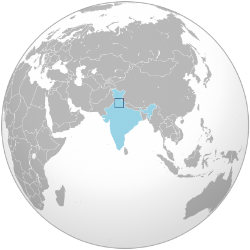
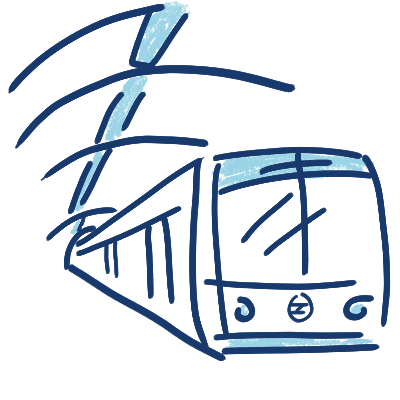

The Making of the Delhi Metro
By
Purvika Sharma
Published on 01 July, 2026
The Making of the Delhi Metro
By
Purvika Sharma
Published on 01 July, 2026

From a single line in 2002 to one of the world's largest metro systems.